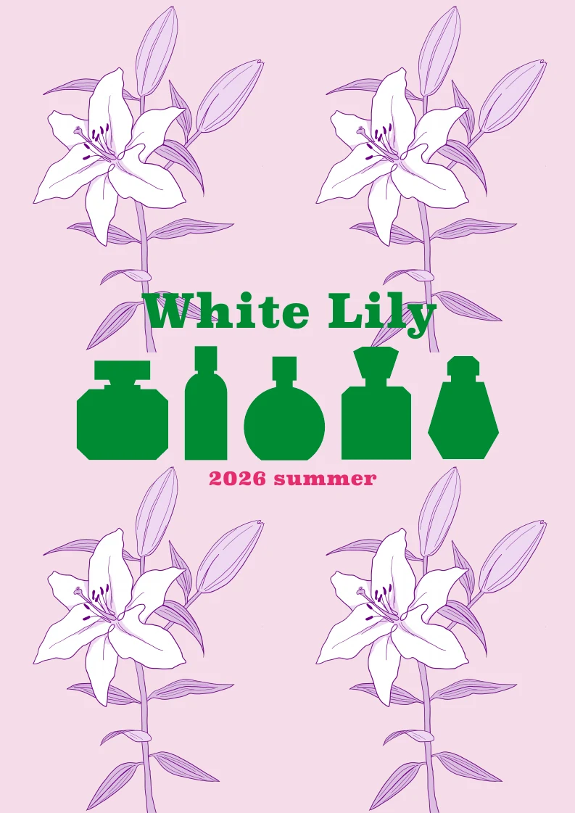
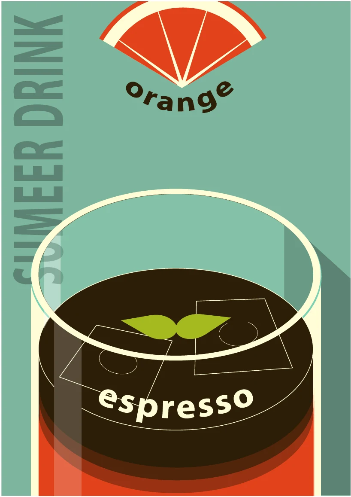
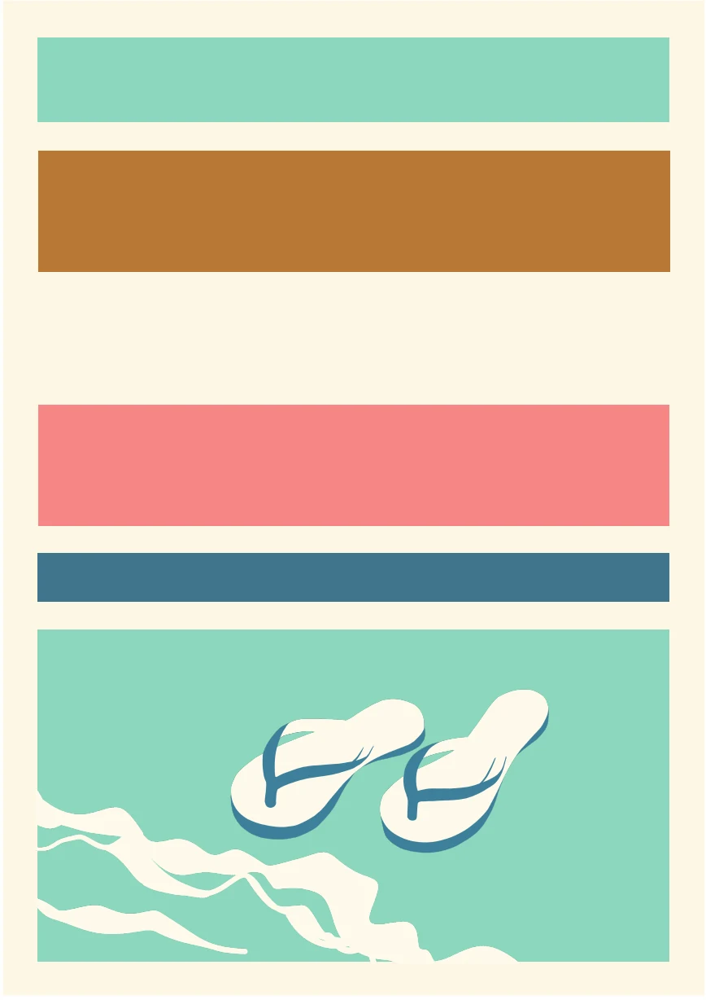
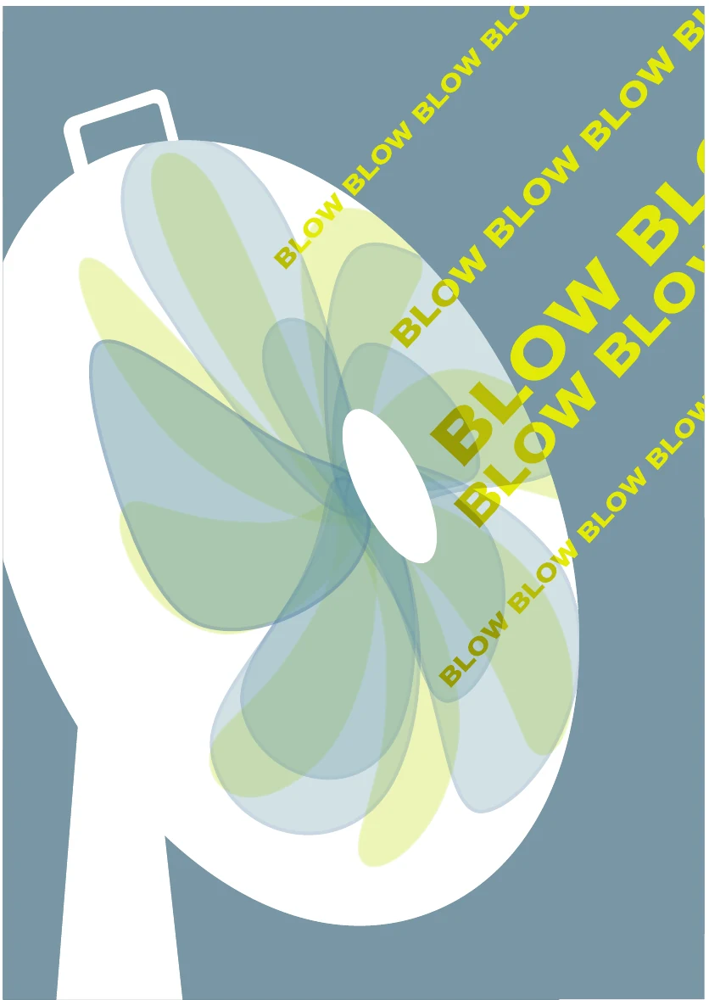

既存ポスターの分析に基づくオリジナルのポスターデザイン制作
目的・背景
ビジュアルリサーチブックを制作していて、見つけた作品に対して、どんな要素がこの作品が与えるイメージを作っているのか詳しく観察したいと感じたから。また、その観察、分析によって得た表現方法や構成の工夫を自分の制作にも活かしたいと感じたため、このようなテーマを設定した。
方法
過去に行った美術館やギャラリーから自分の好みのポスターなどの作品を見つけ、自分なりに構図や色彩に対する特徴を挙げ、その特徴にはどのような効果があるのか、また、自分が受けている印象は構成のどの要素によって与えられているのかを考察する。
その考察から、どの要素を真似するか決定し、作るポスターのモチーフや構成を考える。今回、ポスターに統一テーマとして、夏を選んだ。また、すべてのポスターをレトロな印象を与えるデザインにした。

作品 1
stargazing

作品 2
White Lily

作品 3
espresso

作品 4
COAST

作品 5
BLOW
考察と結論
１つ１つのポスターの構成をじっくり分析することでそのポスターが印象に残る理由や、美しく見える理由が具体的にわかり、色彩や構図が与える影響の大きさをより感じた。
またその構成や表現方法を活かして自分なりのポスターを作ることで、今までの知識では考え付かなかったような構成で作品が作れるようになったため、既存の作品を観察することは重要なことだと思った。また、似た構成でも色彩が違えば印象はとても変わると感じたことから、与えたい印象によって作品を構成している要素ごとのバランスや、何を一番強調するべきかなど、作品を作る前に慎重に設計をすることが大切だと改めて感じた。
→既存作品の分析は、デザインの表現方法を学ぶだけでなく、新たな発想を生み出すための有効な手段である